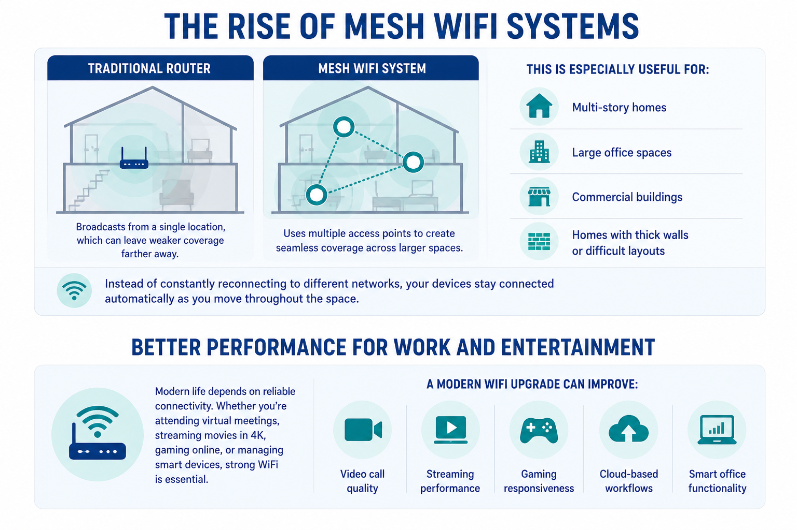

SHARE
Slow internet, buffering videos, dropped video calls, and dead zones around the house can quickly turn everyday tasks into frustrating experiences. As more devices connect to our networks—from smart TVs and gaming consoles to security cameras and smart thermostats—older WiFi systems often struggle to keep up. That’s why upgrading to modern WiFi technology can make a dramatic difference in your home or business.
Why Older WiFi Systems Fall Behind
Many people don’t realize their router may be outdated until performance becomes impossible to ignore. Older routers were designed for a time when homes had only a handful of connected devices. Today, the average household can easily have dozens.
Outdated WiFi systems often lead to:
- • Slow download and upload speeds
- • Weak signals in certain rooms
- • Frequent connection drops
- • Lag during streaming or gaming
- • Poor smart home performance
As internet demands grow, older equipment simply can’t deliver the speed, coverage, and reliability modern users expect.
The Benefits of Modern WiFi
Upgrading to a newer WiFi system offers far more than just faster internet speeds. Modern technology is designed to provide stronger, smarter, and more reliable connectivity throughout your entire space.
Faster Speeds
Modern routers support higher bandwidth and faster wireless standards, allowing devices to stream, game, and download with less interruption.
Better Coverage
Newer WiFi systems—especially mesh systems—help eliminate dead zones by spreading coverage evenly throughout your home or office.
Improved Device Management
Today’s routers are built to handle multiple connected devices at once without slowing down the network.
Stronger Security
Modern WiFi systems include updated security features that help protect your network and connected devices from cyber threats.
The Rise of Mesh WiFi Systems
Traditional routers broadcast from a single location, which can leave weaker coverage farther away. Mesh WiFi systems use multiple access points to create seamless coverage across larger spaces.
This is especially useful for:
- • Multi-story homes
- • Large office spaces
- • Commercial buildings
- • Homes with thick walls or difficult layouts
Instead of constantly reconnecting to different networks, your devices stay connected automatically as you move throughout the space.

Better Performance for Work and Entertainment
Modern life depends on reliable connectivity. Whether you’re attending virtual meetings, streaming movies in 4K, gaming online, or managing smart devices, strong WiFi is essential.
A modern WiFi upgrade can improve:
- • Video call quality
- • Streaming performance
- • Gaming responsiveness
- • Cloud-based workflows
- • Smart office functionality
For businesses, reliable WiFi also creates a more professional and productive environment for employees and clients.
Better for the Earth
Modern Wi-Fi is significantly more environmentally friendly than older networking equipment. Newer Wi-Fi technologies and upgraded home routers are designed with advanced, power-saving features that consume a fraction of the energy older models required, while delivering stronger coverage and faster speeds.
Superior Energy Efficiency
- • Lower Power Consumption: Devices connected to Wi-Fi 6 can use up to 67% less battery power. Furthermore, modern routers dynamically power down specific antennas or radios when connected devices are idle, reducing overall electricity waste.
- • Energy Star Ratings: Most modern, off-the-shelf routers come with Energy Star certifications, meaning they have met strict guidelines for energy efficiency.
The Backbone is Greener (Fiber Optics)
- • Light Over Electricity: Upgrading from old copper networks (Cable/DSL) to modern fiber-optic internet is a massive environmental upgrade. Fiber uses pulses of light rather than electricity, making it up to 95% more energy-efficient than copper per petabyte of data.
- • Less Material Waste: Copper mining is environmentally destructive, whereas fiber is made from abundant materials like glass or silicon. Fiber cables are lighter, thinner, and last much longer.
Reduced Electronic Waste (E-Waste)
- • Better Durability: Because fiber-optic networks do not corrode or degrade like copper lines, they require less maintenance, reducing the number of service trucks sent to your home.
- • Longer Lifespans: Modern Wi-Fi networks allow for more devices to connect seamlessly over the air, reducing the need to buy extra physical cables and adapters that eventually become e-waste.
Eco-Conscious Manufacturing
- • Keep devices updated: Upgrading to newer, Energy-Star-certified hardware allows you to replace older, energy-guzzling routers with much more efficient technology.
- • Recycle old gear: When you upgrade, be sure to recycle your old routers properly. Check e-waste drop-off locations at local electronic stores, like Best Buy, to keep hazardous components out of landfills.
Signs It’s Time to Upgrade
You may benefit from a WiFi upgrade if:
- • Your router is more than 4–5 years old
- • You experience frequent buffering or lag
- • Certain rooms have poor signal strength
- • Smart devices disconnect regularly
- • Your internet feels slower despite paying for high speeds
In many cases, your internet provider isn’t the problem—your equipment is.
Professional Installation Makes a Difference
Choosing the right WiFi setup can feel overwhelming. Placement, coverage, device compatibility, and network optimization all play a role in performance.
Professional installation ensures:
- • Proper router and access point placement
- • Maximum signal coverage
- • Secure network configuration
- • Reliable performance across all devices
Whether it’s for your home, office, or commercial space, professional setup helps you get the most out of your internet investment.
An Oracle Technician at a Client's Home in Sandy Springs, GA
Modern WiFi is no longer a luxury—it’s the foundation of how we work, communicate, and live. Upgrading your network can improve speed, reliability, security, and overall quality of life. If your current setup is struggling to keep up, investing in a modern WiFi solution could be one of the smartest upgrades you make.
Oracle can inspect your current network, identify coverage issues, and upgrade your home with a modern WiFi solution designed for faster speeds, stronger reliability, and seamless connectivity throughout every room.